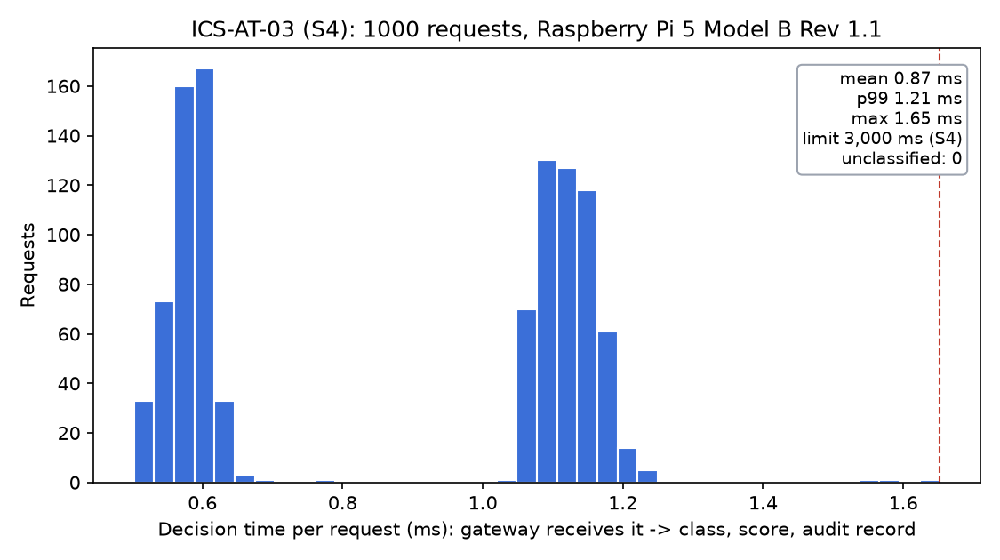
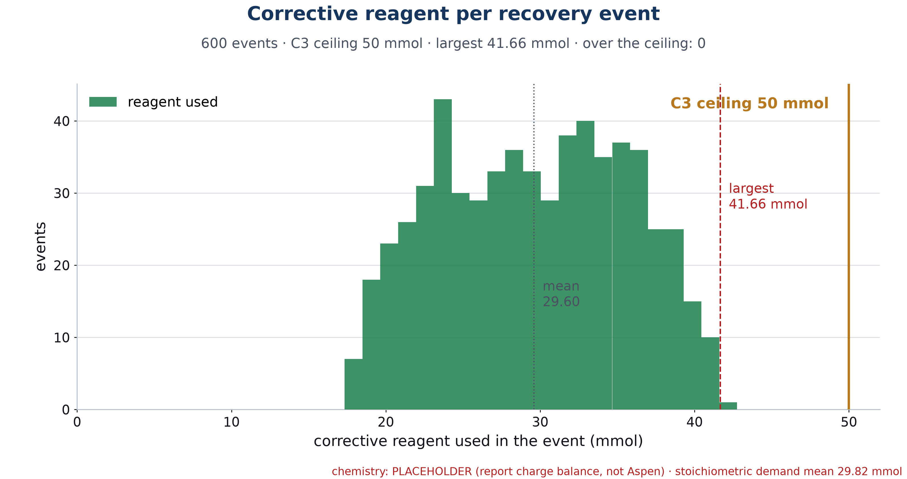
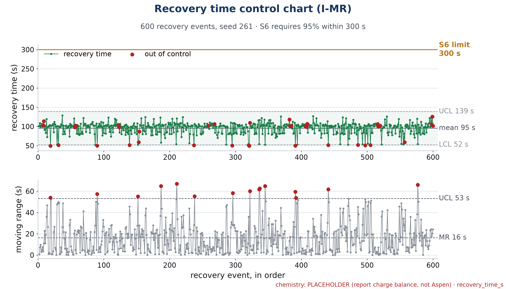
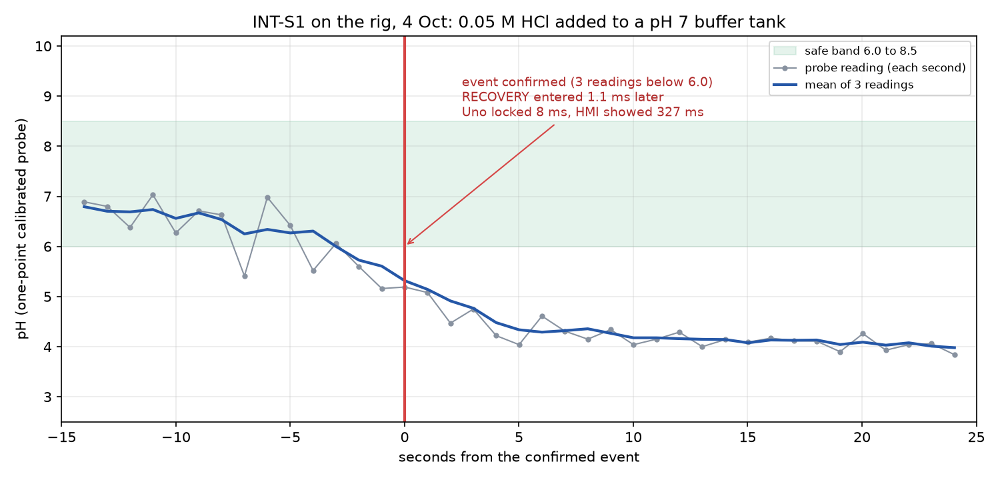

A real pH probe on a 5 L tank feeds an Arduino Uno and a Raspberry Pi 5. The Pi runs the security gateway, the Model A safety AI and the recovery planner; the operator's laptop runs the HMI, and every dose is added by hand when the Uno's light comes on. Results as of 3 Oct 2026.
Full marks (Satisfactory) need one constraint and one spec per department plus one integrated spec. The pair we present for each department is listed first; extras count toward Exemplary.
| Dept | Constraint | Spec | Extras |
|---|---|---|---|
| CHE | C1 reagents ≤ 5 wt% Calculated · approval in hand photo, labels, titration to add |
S7 pump ≤ 500 mL/min Tested 3 Oct · numbers to add |
S1 pH hold 10 min To do |
| ICS | C2 gateway is the only path To do on the Pi script ready |
S4 class and score within 3 s Proven on the Pi · max 1.65 ms |
S3 replay/stale rejected 2,000 / 2,000 |
| ISE | C3 ≤ 50 mmol per recovery Proven · 600 events, max 41.7 |
S5 SUS ≥ 80 Hattan's study backup: S6, proven 600 / 600 |
S6 recovery ≤ 300 s 600 / 600 |
| INT | INT-S1 recovery mode within 2 s Proven live on the rig · 1.1 ms |
— | |
| No. | Constraint (full) | Test procedure | Achieved result / evidence |
|---|---|---|---|
| C1 | During all neutralization and recovery operations, the prototype shall use only lab-approved dilute acid and base solutions with concentrations not exceeding 5 wt%. | 1. Show the CHE supervisor's signed approval for every solution used. | Approval obtained (confirmed 1 Oct). Scan: ________ |
| 2. Check each bottle's label: name, molarity, wt%, date. | ___ of ___ bottles labelled | ||
| 3. wt% = molarity × molar mass ÷ (10 × density). | HCl 0.05 M = 0.18 wt%; HCl 0.005 M = 0.018 wt% NaOH 0.5 M = 1.96 wt%; NaOH 0.005 M = 0.02 wt% Tank: 0.42 g NaHCO₃ in 5 L = 0.008 wt% Highest: 1.96 wt% ≤ 5 | ||
| 4. Titrate 10.00 mL of the 0.05 M HCl and the 0.5 M NaOH against the lab standard. | HCl ______ M; NaOH ______ M | ||
| Pass if: approved, labelled, every solution ≤ 5 wt%. | Met on calculation; complete with the scan and photos. |
| No. | Spec (full) | Test procedure | Achieved result / evidence |
|---|---|---|---|
| S7 | The selected dosing pump shall have a manufacturer-rated maximum flow capacity not exceeding 500 mL/min. | 1. Read the rating: Kamoer KCP-X-S10B (24 V, 5 W) label and datasheet. | Rated: 19–65 mL/min adjustable, max 65 mL/min (product listing; confirm on the datasheet) |
| 2. Speed knob at MAX, pump water into a tared beaker on the balance for 60 s. | Run 1: ______ mL/min | ||
| 3. Repeat twice. | Run 2: ______ · Run 3: ______ · Mean: ______ | ||
| Pass if: rated and measured maximum ≤ 500 mL/min. | Rated 65 ≤ 500 · measured: add the numbers |
| No. | Spec (full) | Test procedure | Achieved result / evidence |
|---|---|---|---|
| S1 | Under defined nominal steady-state influent conditions, the neutralization process shall maintain tank pH between 6.5 and 7.5 for at least 10 min. | 1. Probe calibrated; tank of baking-soda water brought to pH 6.8–7.2 with 0.05 M HCl (about 18 mL). | Start pH ______ |
| 2. HMI: Evidence → 10-minute pH hold → Start. Add any dose the HMI asks for. | Doses added ______ | ||
| 3. At 600 s, read the result and download the CSV. | Lowest ______ · Highest ______ | ||
| Pass if: every reading 6.5–7.5 for the full 10 min. | ________ |
| No. | Constraint (full) | Test procedure | Achieved result / evidence |
|---|---|---|---|
| C2 | All actuator commands must pass through the ChemShield gateway as the sole authorized control path during testing and demonstration. | 1. Pi on its own Wi-Fi with the firewall on: gateway/firewall/c2_network.sh on <password>; laptop joins ChemShield-Lab. | ________ |
2. From the laptop: nmap -Pn -p- 10.42.0.1. | Open ports ______ (expect 22, 8000) | ||
3. On the Pi: routing off, sysctl net.ipv4.ip_forward. | ______ (expect 0) | ||
| 4. HMI engineer panel: dose "unsigned" and "wrong key". | Already covered by the automated tests (HTTP 401); live: ______ | ||
5. Password login: ssh -o PubkeyAuthentication=no chemshield@10.42.0.1. | Refused? ______ | ||
| 6. The Uno has no network address; it is reachable only through the Pi's USB. Watch its light during steps 2–5. | Light came on? ______ | ||
| Pass if: only 22 and 8000 open, ip_forward 0, every bypass refused, light never on. | ________ |
nmap -Pn --top-ports 1000 10.42.0.1, seconds) and the HMI's "unsigned" button returning 401.| No. | Spec (full) | Test procedure | Achieved result / evidence |
|---|---|---|---|
| S4 | For each detected abnormal event, the AI threat-triage module shall assign an event class and risk score within 3 s after detection. | 1. On the Pi: python -m model_a.latency_test --n 1000: 1,000 signed requests through the real gateway and Model A (normal, harmful, recovery, lost-probe). | 3 Oct, Raspberry Pi 5 Model B: 1,000 / 1,000 classified; mean 0.87 ms, p99 1.21 ms, max 1.65 ms. Labels: 529 acceptable, 277 harmful, 194 uncertain. |
| 2. Timeout check: Model A frozen; each request must come back UNCERTAIN and be blocked. | 3 / 3 blocked, slowest 100.4 ms | ||
| 3. On the real rig (2 Oct): unsafe and normal doses requested from the HMI at pH 7.8. | 10 mL NaOH 0.5 M → HARMFUL, risk 1.00, 1.27 ms, blocked (would reach pH 10.5) 10 mL NaOH 0.005 M → ACCEPTABLE, risk 0.005, 2.23 ms, accepted | ||
| Pass if: every request gets a class and score in under 3,000 ms. | Met |

| No. | Spec (full) | Test procedure | Achieved result / evidence |
|---|---|---|---|
| S3 | In the defined validation scenarios, the security layer shall reject at least 99% of replayed or stale control commands. | 1. Replay: hmi.attack_station --mode replay-now --n 1000; each signed command is sent again as an exact copy. | 1,000 / 1,000 copies rejected as Replayed (reused nonce) |
2. Stale: --mode stale --age 5 --n 1000 (signed, dated 5 s ago). | 1,000 / 1,000 rejected as Stale | ||
3. Control: --age 1 --n 100 (fresh enough). None may be called Stale. | 0 / 100 called Stale (held by the 15 s mixing lockout instead) | ||
| 4. Audit log exported and verified; nothing reached the Uno. | 3,103 records, CHAIN OK; 0 forwarded to the Uno | ||
| Pass if: ≥ 1,980 of 2,000 rejected and no fresh command called Replayed or Stale. | Met: 2,000 / 2,000 = 100% |
--n 100 each from the laptop; the reviewer watches the Replayed and Stale counters on the HMI climb in seconds.| No. | Constraint (full) | Test procedure | Achieved result / evidence |
|---|---|---|---|
| C3 | Recovery from an unsafe dosing event shall consume no more than 50 mmol of reagent. | 1. 600 simulated upsets recovered by the MILP planner: python -m redosing.run_all. | 3 Oct: max 41.7 mmol, mean 29.6, 0 of 600 over 50 |
| 2. Gateway hard limit: a dose that would take an event past 50 mmol is refused (EVENT_MMOL_LIMIT). | Passes in the automated tests; show live in the HMI demo with the largest upset | ||
| 3. Real tank, after the INT-S1 overdose: follow the HMI's "Dose now" steps; read the event's total. | Event used ______ mmol | ||
| Pass if: no event over 50 mmol, and the gateway refuses the excess. | Met in simulation · live total to add |

| No. | Spec (full) | Test procedure | Achieved result / evidence |
|---|---|---|---|
| S5 | Achieve a System Usability Scale score of at least 80 for the operator interface. | 1. 5–8 students not on the team do five tasks on the HMI (python -m hmi.demo), no help. | Participants ______ · tasks passed ______ |
| 2. Each fills in the 10-question SUS form. | Forms signed ______ | ||
3. Score: sus_score.py --report. | Scores ______ · Mean ______ | ||
| Pass if: mean SUS ≥ 80. | ________ |
| No. | Spec (full) | Test procedure | Achieved result / evidence |
|---|---|---|---|
| S6 | Complete ≥95% of recovery events within 300 s. | Same 600-event batch as C3; time from the confirmed event to pH back in 6.0–8.5 and held. | 600 / 600 within 300 s · mean 95.5 s · max 128.7 s |
| Pass if: ≥ 95% within 300 s. | Met: 100% |

| No. | Spec (full) | Test procedure | Achieved result / evidence |
|---|---|---|---|
| INT-S1 | The integrated system shall enter safe-recovery mode within 2 s of confirming a successful unsafe dosing event. | 1. Dry run: 100 unsafe events on the station, HMI watching over HTTP (hmi.int_s1_batch). | 100 / 100 under 2 s · switch max 7.1 ms · on screen mean 124 ms, max 261 ms |
| 2. Real rig, 4 Oct: the real probe in a pH 7 buffer tank (the system to protect). 0.05 M HCl added by syringe, not through the HMI, until the pH fell below 6.0. | Event E-0001 confirmed 14:23:54.507 UTC on readings 5.6, 5.16, 5.19 (first below 6.0 at 14:23:52.5). Banner red, Uno light slow-blinking. | ||
| 3. HMI: Evidence → Recovery-mode timing, and the hash-chained audit log (57 records, CHAIN OK). | Confirmed → RECOVERY 1.1 ms · Uno locked 8.1 ms · HMI showed it 326.7 ms · pass_2s = True | ||
| Pass if: RECOVERY within 2,000 ms of the confirmed event and the Uno shows locked. | Met: 1.1 ms against 2,000 ms |

Run them in this order at the booth (about 8 minutes). The Pi is on its own Wi-Fi with the firewall on; before the reviewers arrive, sync the Pi's clock from the laptop and check the probe in pH 7 buffer.
Probe → Uno → Pi → laptop, live, once a second.
Every solution well under 5 wt%.
The light only ever comes on for an approved dose.
HARMFUL, risk score, about 1–2 ms; light stays off.
python -m hmi.attack_station --station http://10.42.0.1:8000 --mode replay-now --n 100--mode stale --age 5 --n 100.Replayed and Stale counters climb to 100 each; nothing reaches the Uno.
nmap -Pn --top-ports 1000 10.42.0.1: only 22 and 8000.No other door to the pump side; unsigned commands are refused.
Red banner and slow-blinking light; confirmed → RECOVERY in milliseconds.
A real recovery counted live, and 600 simulated ones all under 50.
Far under 500 mL/min.
HALTED, fast-blinking light, nothing restarts on its own.
HALTED, "Uno link lost", doses refused until RESUME.
python -m hmi.demo --port 8081 --station-port 8001A full automatic recovery under 50 mmol, without risking the real tank.
In this order. Film each one: the video is the backup if anything fails live on Monday.